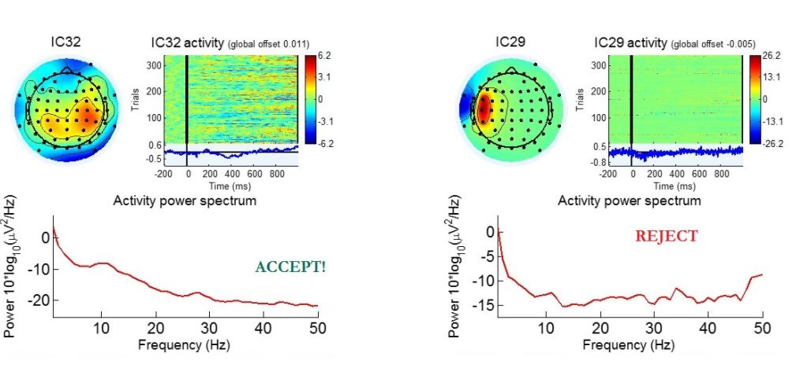

Figure: Artifactual IC rejection. Left: An accepted independent component. The IC representation consists of a scalp topography image (top left), an event-related potential (ERP) image (top right), a time series displaying activity from the component (middle right, below the ERP diagram) and an activity power spectrum plot (bottom). In the scalp projections diagram, red, blue and white colors denote positive, negative and null contributions respectively. The heat map demonstrates inputs from multiple electrodes. Right: A rejected independent component representing a muscle artifact from the side of head. The power spectrum plot reflects no apparent peaks in the alpha-band.
|